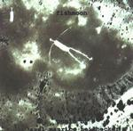

Home Artist links Label link

Axel Manrico Heilhecker - Fishmoon
| Artist: | Axel Manrico Heilhecker |
| Title: | Fishmoon |
| Label: | Think Progressive |
| Length(s): | 47 minutes |
| Year(s) of release: | 2001 |
| Month of review: | [07/2001] |
Line up
Axel Manrico Heilhecker - except
Steve Baltes - beats on 7
Helmut Zerlett - beats on 8
Bertil Mark - drums on 6
Tracks
| 1) | Belle De Jour | 4.54
|
| 2) | One Man Tango | 4.20
|
| 3) | For Your Pleasure | 4.37
|
| 4) | Fishmoon Rising | 2.06
|
| 5) | Fishmoon | 8.32
|
| 6) | Last Picture | 4.59
|
| 7) | American Zonata | 6.45
|
| 8) | Been There Done This | 4.58
|
| 9) | Is, Isn't | 5.49
|
Summary
I have no idea who he is. I have an idea that he does not belong on
these pages, which is why I kept the review short.
The music
I tend to get more and more stuff that does not really belong my site.
Hence, I'll keep it short. At least I will try.
Took me some time to read the guy's name right, but there it is.
A do-it-yourselver with music inspired on American musical tradition.
Lots of acoustic stuff, the album opens with Belle De Jour where
various bleeps and such have been added. The atmosphere is nicely
sultry: I was reminded a bit of Robbie Robertson's Somewhere
Down The Crazy River, but sadly lacking in vocals.
The music continues to be rather easy-going in the next track. My girl
friend said Dire Straits and I can see what she meant. Bluesiness and
haziness on For You Pleasure. Never gets anywhere though.
More atmosphere again on Fishmoon Rising (Rypdal?). Then we come to the
long title track. A bit more going on here. Some ECMish dark stuff, before
that some rough psyche (but still with a certain tameness) and we come then
to some desolate desert music. Some slide guitar thrown in.
More up-tempo in American Zonata with bleepy keys like in the opener and
an electric guitar here and there. There is a part here that sounds like sitar.
Rawhide and various samples can be heard in Been There Done This and
the album closes with Is, Isn't.
Conclusion
I was not impressed with this (non-prog) album. At times the music doesn't
go anywhere. For the rest it simply is present, but not too.
© Jurriaan Hage